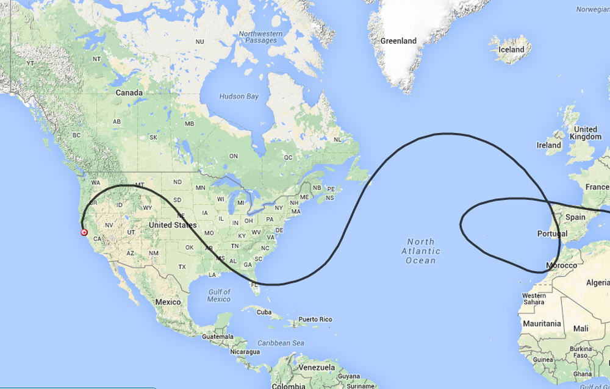

There is a new balloon flying. It’s radio call is K6RPT-12 and it is intended to be a long duration flight.
The balloon was launched this afternoon from the South San Jose area. It is using a Super Cap in place of the battery so it is limited to daylight radio traffic. It does have 4 solar panels and will be flying at about 38,000’ altitude.
The link below will take you to the APRS screen to check on the balloon progress.
http://aprs.fi/#!mt=roadmap&z=13&call=a%2FK6RPT-12&timerange=604800&tail=3600
I will take a shot at a flight prediction but I won’t bet any large amount on this path. The software is not meant to this type of extended duration flight. Don’t expect to see any tracking updates until tomorrow morning.

Don